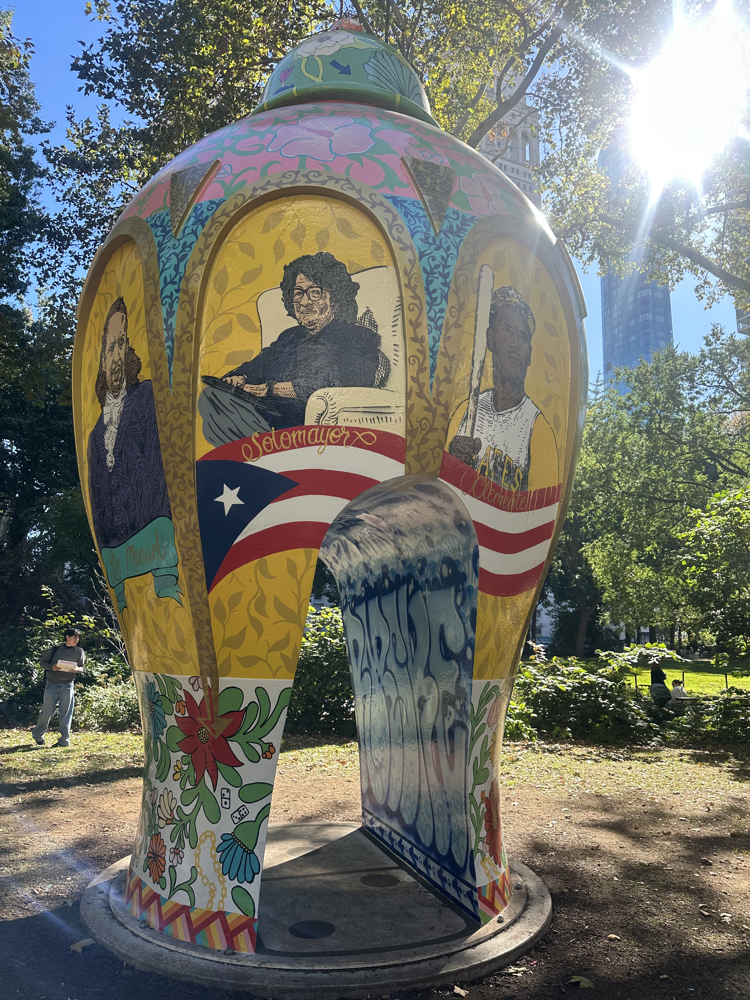

ALFARERO DEL BARRIO, ROBERTO LUGO.
Known for merging historic design and graffiti, his first public NYC art exhibition involves an urn standing 20-feet-tall displaying city life and portraits of individuals he admires.
The park is connected to several systems. A playground area, dog park, dining area and clear walking paths shape who visits and how they navigate through the space. Rotating art and events draw visitors while the permanent Shake Shack draws surrounding office workers during lunch breaks. Generally, the park has a more diverse crowd and a vibrant atmosphere during the day, whereas later in the day, it's a couple-friendly space hosting a younger crowd.
Considering the parks lively and bustling atmosphere, my primary concern was the lack of visitors stopping to look at the art. In my days of observing, i was upset to only find one person who stopped to admire the art. As i started taking a closer look at the art myself, i noticed an unexpected amount of people who grew interested.
This led me to be a part of my observation, comparing the number of people who stopped before vs after i interacted with the art. I concluded that engaging with the parks art gave other individuals some sort of permission to become aware, grow curious and pause.